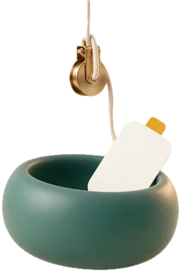
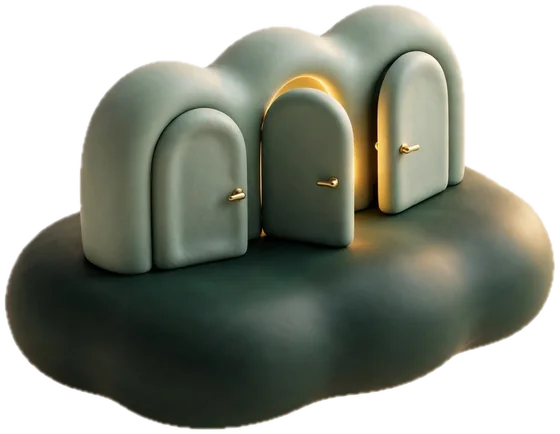
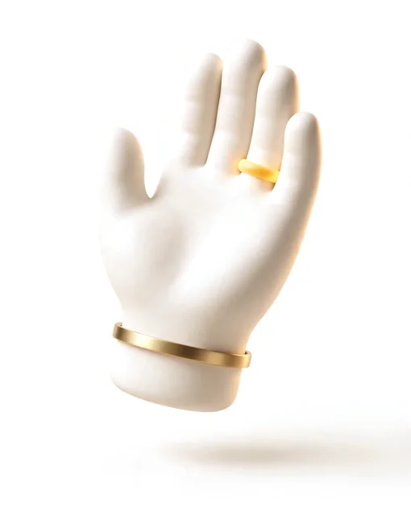
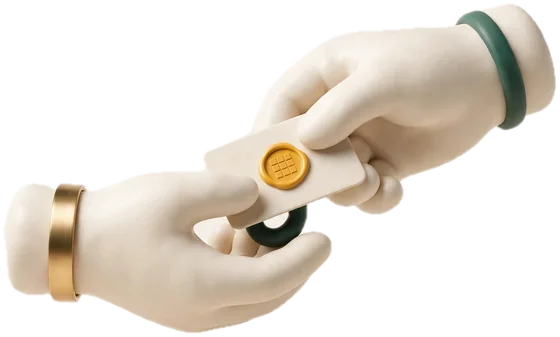
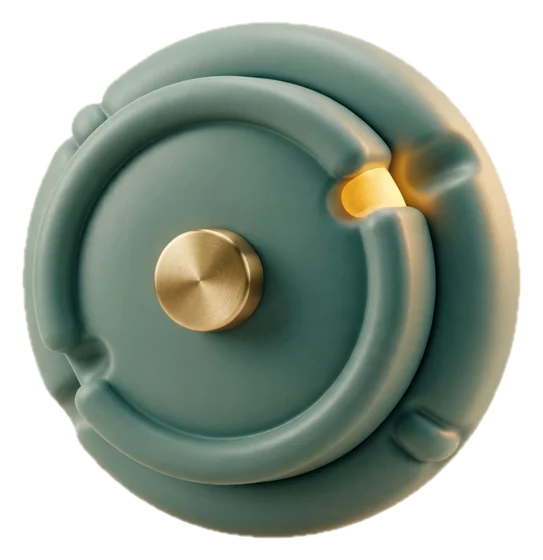
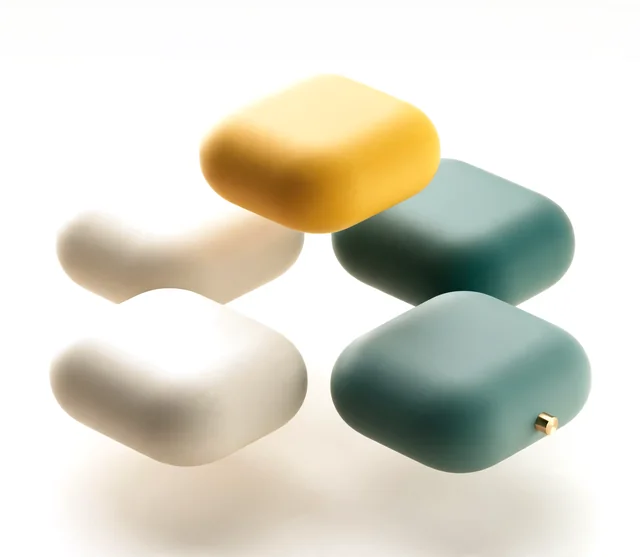
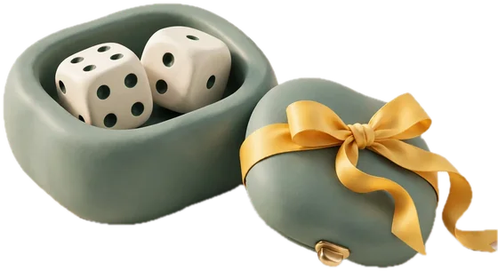

You've got a great idea:
Stop gambling on your agent's options.
Your agent asks: option one, two or three? Some of those answers take weeks to undo. Hoist lifts what each one means for you to the surface, so you decide at a glance.
Run it in your project folder · Python 3.9+ · works with Muse Code · no API key
“Uh… two?”
That's how most hard calls get made with an agent. One line per option, a "Recommended" on one of them, and no word on what it costs you later. In the chat, the choice you'll regret looks exactly like the harmless one.
?When should customers pay for a custom cake? 1. Pay at pickup 2. Small deposit online (Recommended) 3. Full payment online❯2·Refunds? No-shows? Regulars? Nobody said.

Hoist what matters. Decide at a glance.
Before a hard call, the agent stops and asks how you want to decide. Pick Hoist and the question opens as one canvas: every option in plain words, what it costs you later, what would flip the pick, and a critic who argues with your choice. Try it on a real draft.
Loading the canvas…
Answered before you ask.

The questions behind any good decision are known. Hoist answers them up front, on the same rules doctors use to explain treatment choices and engineering teams use to record decisions.
Built on MADR decision records · Ottawa decision aids and the IPDAS standards: every option with its benefits and its harms · contrastive explanations (Miller, 2017): what would change the answer · cognitive forcing (Buçinca et al., 2021): you weigh the options before you see the AI's pick · progressive disclosure: a glance first, depth on request
It's okay to stop and ask.

Your decisions outlive your subscription.
Every call lands in your repo as a plain record. Run out of credits, switch agents, come back in six months: nobody trips over what you already decided.
!Usage limit reached. Switching agents.$another-agent "add a holiday cake menu"·reading docs/decisions/…✓0001 Take a small deposit online, rest at pickup✓0002 Hourly pickup slots, a few cakes per hour◼Holiday orders will use the same deposit and slots.

status: accepted door: heavy deciders: Maya confidence: medium # Choose when customers pay: a small deposit online > Decision: a small deposit online, the rest at pickup. Because it covers ingredients when someone doesn't show, without asking regulars to pay in full days early. Accepted cost: online payments and refunds to handle. Revisit if holiday waste gets costly.
Fast is good. Blind yes is not.
Ask when you want to think it through. Autopilot when you need to ship tonight: the agent decides, and Hoist writes down every call for you to review in the morning.

Ask · defaultYou decide
The agent pauses at hard-to-undo calls and waits while you see what each option means for you.
The agent decides, on the record
No pause. Every call becomes a decision record, marked low confidence until you review it. Any agent can log with hoist log.
Every compartment answers a question.
The canvases come from Bento MADR, an open library that lays a decision out as a bento box, one compartment per question you'd ask. Use it for your own decision records.

White compartments are answered. Yellow is a question the record still owes you.
Your agent will ask again. Next time, know before you pick.
One command adds a hook, a skill and a docs/decisions/ folder to your project. The decision page runs on your machine. No API key.

- 1In your project folder, run
- 2Restart Muse Code thereand trust the folder, so the hook loads.
- 3Build something with real choicesWhen the agent asks how you want to decide, pick Decide with Hoist instead. The page opens on its own.